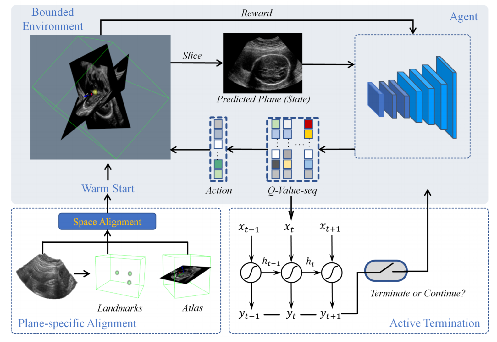
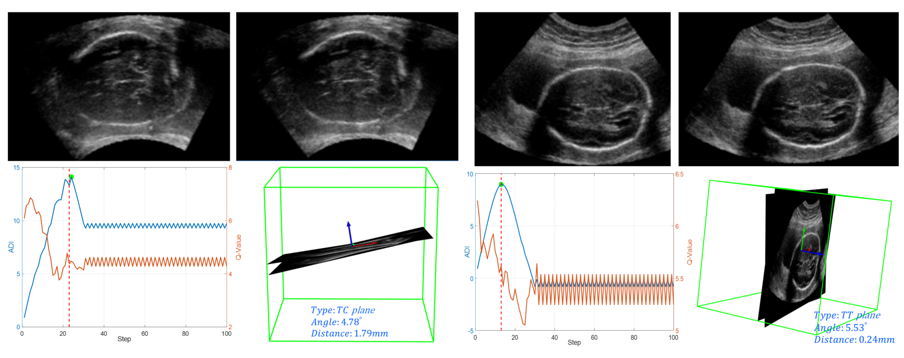
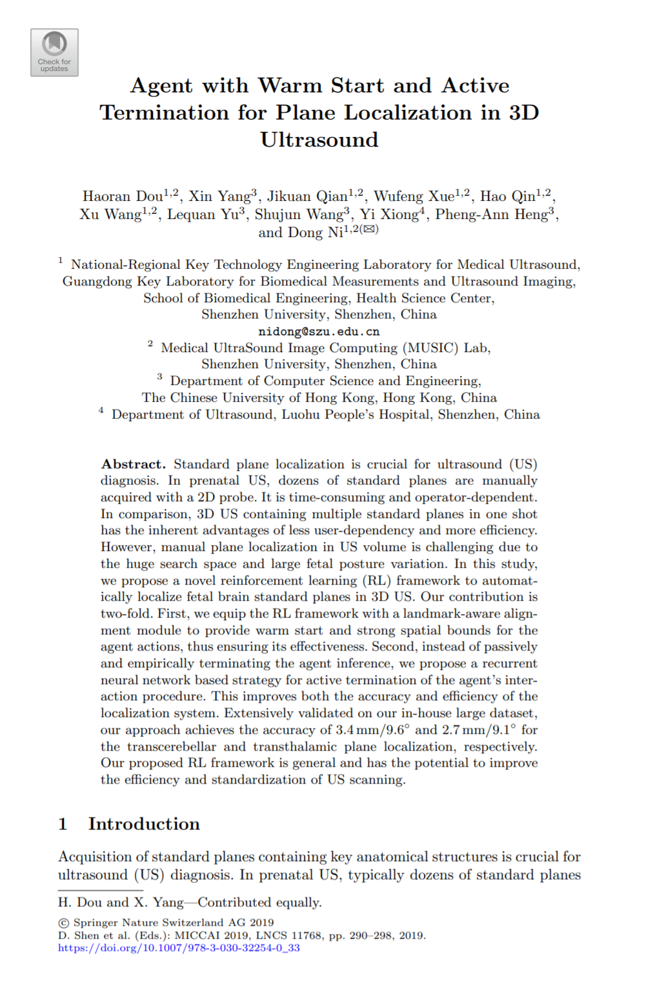

Agent with Warm Start and Active Termination for Plane Localization in 3D Ultrasound
Haoran Dou1†,
Xin Yang2†,
Jikuan Qian1,
Wufeng Xue1,
Hao Qin1,
Xu Wang1,
Lequan Yu2,
Shujun Wang2,
Yi Xiong3,
Pheng-Ann Heng2,
Dong Ni*1.
1. Medical UltraSound Image Computing Lab, Shenzhen University.
2. Department of Computer Science and Engineering, The Chinese University of Hong Kong.
3. Department of Ultrasound, Luohu Peoples Hospital.
|
Abstract
Standard plane localization is crucial for ultrasound (US) diagnosis.
In prenatal US, dozens of standard planes are manually acquired with a 2D probe.
It is time-consuming and operator-dependent.
In comparison, 3D US containing multiple standard planes in one shot has the inherent advantages of less user-dependency and more efficiency.
However, manual plane localization in US volume is challenging due to the huge search space and large fetal posture variation.
In this study, we propose a novel reinforcement learning (RL) framework to automatically localize fetal brain standard planes in 3D US.
Our contribution is twofold.
First, we equip the RL framework with a landmark-aware alignment module to provide warm start and strong spatial bounds for the agent actions, thus ensuring its effectiveness.
Second, instead of passively and empirically terminating the agent inference, we propose a recurrent neural network based strategy for active termination of the agent’s interaction procedure.
This improves both the accuracy and efficiency of the localization system.
Extensively validated on our in-house large dataset, our approach achieves the accuracy of 3.4mm/9.6◦and 2.7mm/9.1◦ for the transcerebellar and transthalamic plane localization, respectively.
Our proposed RL framework is general and has the potential to improve the efficiency and standardization of US scanning.
|
Method

We propose to localize fetal brain standard planes in US volumes with a RL framework, which can progressively interact with the volumes and modify the search trajectory towards the final target plane.
Specifically, we equipped the RL framework with 1) a landmark-aware alignment module for warm start, to ensure its effectiveness, and also 2) a recurrent neural network based strategy for active termination of the interaction procedure, to improve its accuracy and efficiency.
|
Results

TC (left) and TT (right) results. Top row: ground truth (left) and predicted (right) plane. Bottom row: left, active termination step (dotted red line) compared to optimal step in green dot, 3D visualization of ground truth and predicted plane (right).
|
|

|
Agent with Warm Start and Active Termination for Plane Localization in 3D Ultrasound
Haoran Dou*, Xin Yang*, Jikuan Qian, Wufeng Xue, Hao Qin, Xu Wang, Lequan Yu, Shujun Wang, Yi Xiong, Pheng-Ann Heng, Dong Ni.
MICCAI, 2019 (Oral Presentation)
|
Acknowledgments
Funding for this research is provided by National Natural Science Foundation of China, Shenzhen Peacock Plan, Medical Scientific Research Foundation of Guangdong Province, China and National Natural Science Foundation of China.
|
|